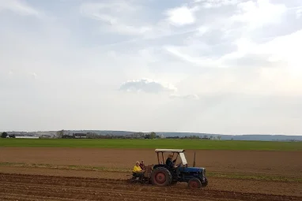
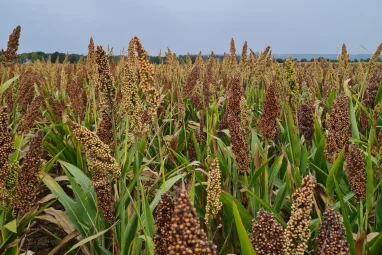
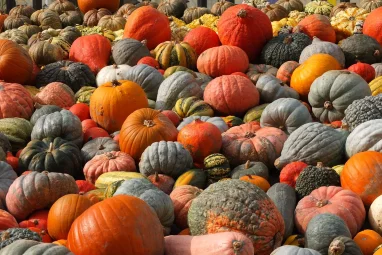
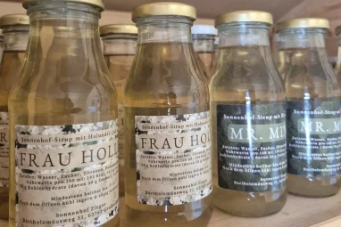
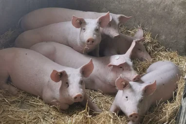
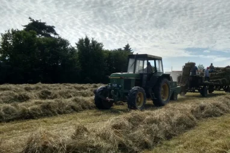

Unser Bauernhof liegt außerhalb der Gemeinde Großostheim in der Region des Bayerischen Untermains. 1969 wurde er von Anne-Liese und Herbert Zieger gebaut und gegründet. Inzwischen leben und arbeiten drei Generationen auf dem Sonnenhof und kümmern sich um Schweine, Hühner, Pferde und Katzen. Auf unseren umliegenden Feldern bauen wir Lebens- und Futtermittel an.
Wir verkaufen ab HofWer Kartoffeln, Hirse, Sirup oder (während der Saison) Kürbisse bei uns kaufen möchte, kann jederzeit vorbeikommen und sich direkt in unserer Verkaufshütte bzw. der Kürbis-Auswahl im Hof selbst bedienen. Die Preise stehen jeweils bei den Produkten, so dass jeder den passenden Geldbetrag einfach in die Kasse werfen kann. Um Heu oder Stroh zu kaufen, nehmen Sie gern Kontakt mit uns auf, damit wir die passende Menge für Sie zur Abholung bereitlegen können.
Wir bieten ganzjährig eigene Kartoffeln: Frühkartoffeln von Juni bis August sowie den Rest des Jahres Kartoffeln aus der Herbst-Ernte zum Einkellern oder in kleinen Päckchen.
Hirse war um 5.000 v. Chr. Grundnahrungsmittel in Deutschland, dann geriet sie in Vergessenheit. Wir holen die hitzeresistente Pflanze zurück und versorgen Sie mit passenden Rezepten.
Von Mitte August bis Ende Oktober ist bei uns Kürbis-Zeit. Bei unserer Ess-, Schnitz- und Zierkürbisse-Auswahl ist für jeden Anlass und Geschmack etwas dabei.
In unseren Sirup-Varianten Mr. Minze und Frau Holle steckt neben Pfefferminze bzw. Holunderblüte auch Zucker von unseren Rüben. Dazu gibt’s Rezeptideen von Eis bis Salatdressing.
Unsere Schweine fahren wir persönlich und ohne Umwege nach Aschaffenburg. Dort werden sie im Schlachthof geschlachtet und im Landkreis in verschiedenen Fleischereien verarbeitet und vertrieben.
Das Heu und Stroh wächst auf Wiesen und Feldern rund um unseren Hof. Wir pressen es zu kleinen Ballen sowie Rundballen. Perfekt als Futter und Einstreu für Hasen, Pferde und alles dazwischen.

Schön, dass Sie uns hier gefunden haben. Wenn Sie uns kontaktieren möchten, rufen Sie gern an oder schreiben
eine Mail: